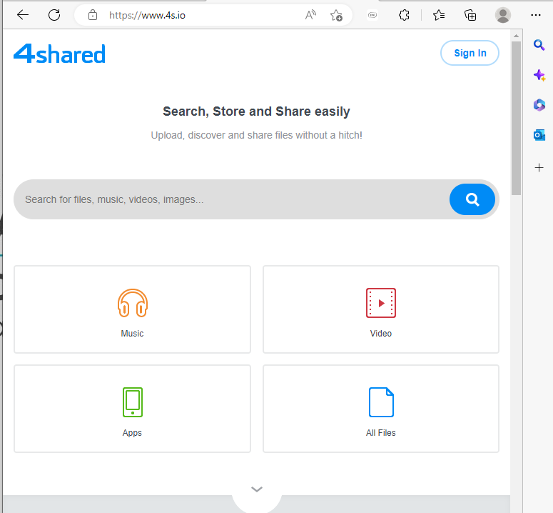

Range of Purposes
Voice Communication
The Internet is used for voice communication through Audio Conferencing, Video Conferencing and VoIP.
Audio Conferencing is an audio call between two or more computers which dial into a central system which connects them. Using a microphone and speakers enables communication and collaboration simultaneously. Many audio conferencing products contain online collaboration elements like screen-sharing which further enhances the value of audio meetings. An example of this would be Skype. (Mitel, 2022)
(Skype, 2023)
Video Conferencing works like audio conferencing with the added advantage of all the participants being able to see each other by using webcams. Also called virtual meeting or web conferencing, video conferencing became extremely popular during the Covid pandemic when businesses, schools and others had to go online rather than having face to face interaction.
Examples of video conferencing would be Microsoft Teams and Zoom (Webex, 2023)

(Microsoft, 2023)

(Zoom, 2023)
VoIP means “Voice Over Internet Protocol” and it refers to a system of communicating over the internet via computer, a VoIP phone or by using an analog telephone adapter connected to the network. With VoIP, analog voice calls are converted into packets of data, which travel over the internet and for the best voice quality and security a private IP network could be used. Using a VoIP service you can also call landline or mobile phones. (Cisco, 2023)
How VoIP works versus how Public Switched Telephone Network (PSTN) works:


(Webex, 2023)
Written Communication
E-Mail is short for electronic mail which is the transmission of messages over the internet, an email can be sent to single or multiple recipients and can be instantly sent to anywhere in the world. Once you have the recipient’s email address a message which can contain text, files, images or other attachments can be sent, using email software such as Microsoft Outlook or Eudora. It is imperative that the email software is protected by up to date anti-virus programmes as junk mail or spam emails can contain viruses which can quickly spread and cause serious damage depending on the purpose of these types of viruses. For relatively little an anti-virus plan may be purchased e.g. Norton AntiVirus:
 (Norton, 2023)
(Norton, 2023)
Instant Messaging or IM is one of the fastest growing forms of internet communications. IM is used by millions of people daily to contact family and friends due to its real-time nature as the message appears instantly on the recipient’s screen, either on a smartphone, computer or other electronic device with internet connection. WhatsApp is among the most popular site for private use but instant messaging is also becoming popular in the business world for communication and collaboration. A chatbot is a type of instant messaging where software simulates human-like conversations with users to answer predictable questions and are widely used as a customer service. Microsoft Teams has an instant messaging app called Chat, there is even an app to keep all chats in one place:
 (Microsoft, 2023)
(Microsoft, 2023)
Internet Relay Chat (IRC) is also a well-known means of communication where people all over the world can exchange text messages. This method requires an IRC client and a channel on a selected network. The IRC client sends the messages to an IRC server from which all the messages are broadcast. Messages can be shared with just one person or a number of people. IRC is used by both individuals and businesses because it facilitates text-based communications on a group basis and can be topic driven. The disadvantage of IRC is lag which may be helped by reconnecting on a different server.
 (Ionos Digital Guide, 2022)
(Ionos Digital Guide, 2022)
SMS & Wireless Communications Short message service is the protocol used for sending short messages over wireless networks. Unlike other instant messaging services as earlier described, SMS works on the fundamental voice rather than the data part of the wireless network. It was originally developed for GSM networks but are still running on modern networks like 4G and 5G. It allows for up to messages of 160 alphanumeric characters in length and cannot contain images or graphics. The message is received by a Short Message Service Centre, (SMSC) which forward it to the appropriate device or system. Multimedia Messaging Service, (MMS) evolved which provided enabled the sending of text, sounds, images and video to handsets which were MMS capable. These simple messages require a surprising amount of coordination and technology working in the background to be sent. Wireless communications are continuously upgrading and improving and wireless devices like the smartphone is now a mini computer and with an internet account all of the functions discussed can be accessed. Smart watches are relatively new and also have multi functions available on them.
Each character in an SMS message is defined by a 7-bits GSM alphabet that covers both Latin and Greek letters. For example, 48656C6C6F is the GSM alphabet equivalent of the word Hello. The data format for the messages are described by the protocol description unit (PDU) which forms a string of hexadecimal-octets and semi decimal-octets.

(Android Authority, 2022)
Information Search
In the modern world a vast collection of information is available on the World Wide Web simply by using a web browser. A browser is a software application used to locate, retrieve and display content including Web pages, images, video and other files. Familiar browsers would be Microsoft Edge, Google Chrome, Safari, Yahoo and Firefox Mozilla. The search engine is a program that searches for specific keywords and returns a list of the documents where the keywords are found. Another program called an Indexer reads these documents and creates an index based on the words contained in each document. By using a proprietary algorithm it creates its indices which will produce the best return for each query. These indices are giant databases of information that is collected and stored and subsequently searched. Google is the largest public internet search engine and has billions of web pages on its indices. There are tips available on how to get the best result from your search for example using quotation marks “ “ in your search will result in the engine only searching for the exact words within the quotation marks.
A new addition to web is Chatgpt which is an OpenAI powered assistant that helps people find relevant information quickly, it is in fact a chatbot that generates human like responses to searches.

(Google, 2023)
File Sharing
File Sharing is the term relating to sharing files in a network. File sharing allows several people to use the same file, different people may be given different levels of access and their access may allow them to read, view, print, edit or copy the files or a combination thereof. The level of access privilege is given by an administrator on the file sharing system. In the pre-cloud days file sharing meant copying files to a disc and physically delivering the disc to others. Files were also attached to emails but security concerns now discourage this practice. Cloud offers endless options for file sharing with Google, Microsoft, Apple, Box and Dropbox offering online cloud storage that include file sharing with collaboration features. Each company offer a certain amount of free use but businesses generally opt for a paid plan which includes extras like the collaboration app and calendar apps etc. (Computerworld, 2021)
An example a file share system is 4shared:
(4Shared, 2023)
File Downloading:
Peer-to-peer file sharing software connects users in a network enabling them to search for shared files on the computers of other users connected to the network. Files can then be downloaded directly from other users on the network. Larger files are broken down into smaller chunks and reassembled by the downloader. Again P2P file sharing software have been known to spread viruses and malware so care must be taken when downloading. Piracy can also be a problem with P2P.
Examples of peer-to-peer file sharing applications are Napster, BitTorrent, PirateBay and Limewire.
(LimeWire , 2022)
File Hosting Services are a simple alternative to peer-to-peer software, it is an internet hosting service specifically designed to host user files. It allows users to upload files that could then be accessed over the internet using an authentication method and downloaded. Microsoft OneDrive and Google Workspace provide file hosting services for businesses. (HostingAdvice, 2023)
File Sync and sharing is the process where data files are updated in real-time across multiple devices. Businesses use an enterprise file sync and sharing service to avail of increased security, flexibility and control. The files can be accessed anywhere, data is protected from a cybersecurity attack or lost or stolen devices as data is easily backed up and stored securely. Files are accessed through a website or mobile app and can be easily shared with others for viewing or collaboration.
Again Microsoft OneDrive, Google Drive and Dropbox like many cloud storage providers offer all of the above as part of their packages.
E-Commerce:
E-Commerce is electronically buying and selling online, from the placing of orders to making payments online. Product sellers and service providers can increase sales through online commerce and selling online is a popular sales method worldwide. E-commerce has greatly increased due to the pandemic as people were unable or avoided going to shops. Businesses had to quickly adjust their websites to enable E-Commerce and to stay in business. Like with E-Business there is B2B (business to business) and B2C (business to consumer) and both are done through the website. With B2B businesses often use an automated service where purchasing of necessary items are ordered based on stock quantities.
The E-Commerce industry is a vast as the internet and data shows that global E-Commerce sales could reach to nearly a quarter of all retail sales worldwide this year. It is now possible to set up a retail business without having a physical store and Amazon are a prime example of this. Digital marketing must be fully utilised to attract customers and this includes email marketing, online advertising and search engine optimisation. Tracking of orders is also easily facilitated from the order confirmation email which generally contains a tracking number.
(EcommerceCEO, 2021)